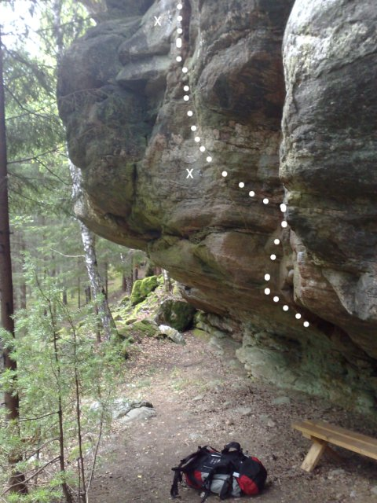
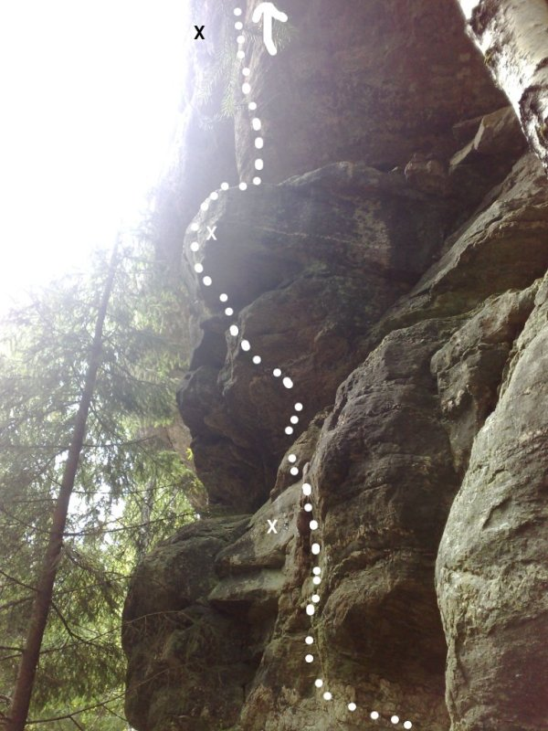
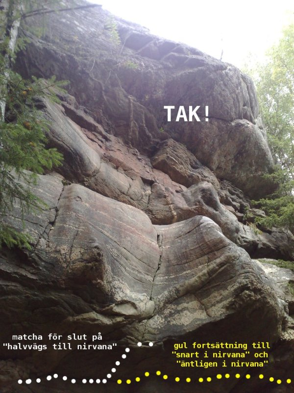
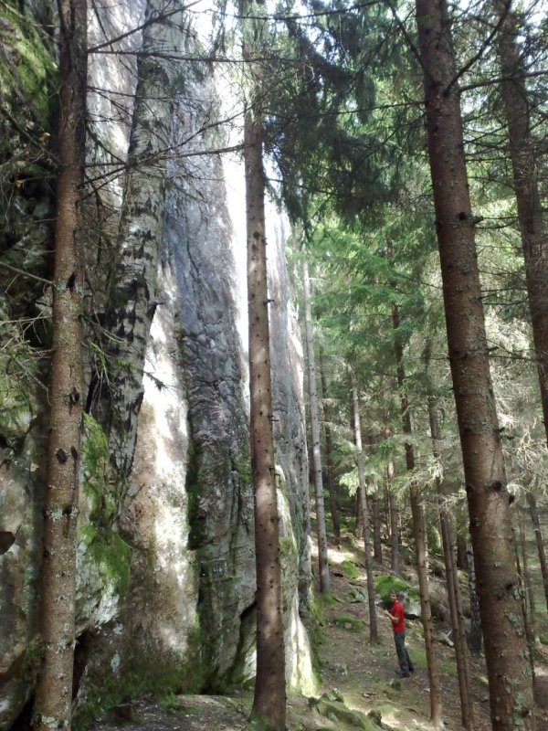
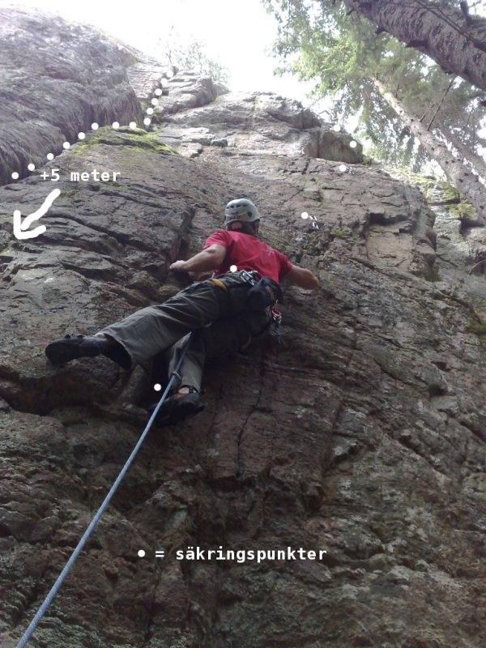

Töcksfors
Lat: 59.500727
Long: 11.87283
Allmänt
Sportklätterklippa (med lite tradklättring) Totalt 21 leder från grad 4-8- intill E18 precis utanför Töcksfors.Perfekt bensträckarklippa på väg till/från norge. Kort anmarsch. Har även en handfull bultade leder i det lättare registret vilket gör det utmärkt som övningsberg. Den branta sektorn är relativt regnsäker och det är västra värmlands bästa sommarklippa då den ligger i skugga mestadels.
Vägbeskrivning
<div style="width: 355; float: right; margin-left: 10px; padding: 3px; border: solid 1px #cccccc;">
<googlemap version="0.9" lat="59.503014" lon="11.873131" type="map" zoom="13">
59.500727, 11.87283, Töcksforsklippan ungefärlig pos.
</googlemap>
</div>
För att nå klippan finns två varianter. Både beskrivna från Årjäng.
1. Precis innan du anländer Töcksfors går en grusväg ner åt vänster. Kör in på denna och efter ungefär 500 meter finns en liten avstickare åt höger i en vänstersväng. Det ser ut som ett eljusspår då elledningar går ovanför, men det finns inga lampor e.dyl. Parkera här, så du kommer bort från den relativt vältrafikerade grusvägen.
Om du når Töcksfors "hamn" och kommer upp i Töcksfors industriområde, så har du kört för långt. Vänd och leta.
Från avstickaren/parkeringen går du 2 minuter längs stigen och ser berget högre upp i terrängen.
2. Kör ända fram till Töcksfors. Vänd på lämplig plats och kör tillbaka mot Årjäng igen.
Efter industriområdet dyker parkeringsfickor upp på höger sida. Kör förbi den första, men var uppmärksam på den andra. När du ser den har du nästan kört förbi då den dyker upp vid ett krön. Parkera på denna och bege dig rakt in i skogen till höger och du hittar klippan efter 100-200m.
Man kan inte se klippan från varken grusvägen eller E18, men det är inte långt ifrån.
Beskrivning

Berget är bitvis fast och fint, bitvis tendens till löst och poröst. Kan dock bero på liten klätteraktivitet. Höjden spänner mellan 10 till 15 meter och är uppdelat i olika sektioner med lite brötigt berg däremellan. Totalt ett par hundra meter brett?
Fram till nyligen var bultare, förstabestigare och därmed grader och namn okända. Ett blåsigt men gemytligt climb-in 2009 klarnade mycket av mystiken då herr bultare (tillika ofta förstabestigare) gav sig tillkänna.
Berget är främst etablerat som en sportklätterklippa. Några igenvuxna sprickor och linjer kan nog bli fina om någon orkar dra några tag med stålborsten.
I skydd under överhänget vid
finns en crag-bänk att vila röven på efter dina sessioner.
Tidigare ägde kommunen klippan och skogen intill. Numera privatperson som har gett samtycke till borstning, bultning och allmän klätternärvaro. Respektera denna fina gest genom att plocka undan skräp och inte göra åverkan utöver denna överenskommelse. En förfrågan har ställts till markägaren om tillstånd att fälla de stora granar som står framför berget. Tyvärr nekande svar. Detta hade annars gjort att solen träffat berget under nästan hela dagen och torkat/värmt det och förhoppningsvis bromsat upp mossans framfart.

Generellt gäller att lederna fått väldigt få bestigningar varpå graderna är svåra att säga. Låt systemet med denna wiki-förare göra att det justeras rätt på sikt.
Någon tidigare förare har aldrig skapats, utan det är det här som gäller.
Leder
Leder, sektioner osv räknas upp från vänster till höger.
Vänsterdelen
Vänsterdelen hyser ett par sva-leder. Behöver underhållas för att inte gro igen. Potential till en handfull fler sva-turer för den intresserade.
- 1
- ???
- 5-6?
- Den borstade svaleden längst till vänster. toppankare om inte minnet sviker, ej fått något namn av FA ännu. Graden oviss.
- 2
- ???
- 5-6?
- Den mossiga (var det 2008/2009 åtminstone) svaleden intill led nr 1. Gemensamt ankare med led nr1. Ej fått något namn av FA ännu. Graden oviss.
- 3
- Rot
- 4-5
- En lite uppbruten "rotig" spricka mellan sva-lederna och taket. Kanske inte bergets finaste.

- 4
- projekt
- grad oviss
- Variant på {{ledlänk|namn=rot}} är att gå från dess spricka, ta ut höger i diagonalspricka och sedan fortsätta uppåt.
Boulder
se mer på www.27crags.com/varmlandskollektivet
I sektionen Taket går det att göra många olika varianter på boulders. Traverserna är kanske de mest intressanta (enda som nämns nedan). En variant för att öva Ap-index är att göra
med endast 4 handflytt. Go go gadget arm.
När du nått slutet på bouldertraverserna kan du börja jobba på returen.
känns som ett uthållighetsprojekt för den svenska bouldereliten.
- 1
- Halvvägs till nirvana
- 6A+
- Travers under taket i marknivå. Börja med halvliggstart på blocket till vänster. Förflytta dig via postlådor och snälla grepp åt höger. Innan sprickan blir helt fördjävlig ska du upp ett snäpp och matcha på listen under där berget bildar en vattenslipad "skål".
- 2
- Nästan i Nirvana
- projekt (7-isch?)
- Fortsätt förbi "halvvägs till nirvana". Postlådorna är nu borta och sprickan elak, samtidigt som fötterna blir svårhittade. När du kommit till den bultade leden genom taket så har du gjort leden.

- 3
- Äntligen i Nirvana
- projekt (7-8-isch?)
- Fortsätt traversen förbi "Nästan i Nirvana" tills du når längst till höger på klippan (förbi björken). Här övergår överhänget/taket till att bli vertikalt och rörelserna annorlunda.
Taket
De tydliga tak och överhäng som finns ungefär mitt på berget. Graderna är bara uppskattade ,nästan alla leder på denna sektor består av korta intensiva crux vilket gör det svårt att sätta grad. Ändra gärna om ni tycker nån grad är helt galen.
- 5
- Thonsumera mera
- 6a+
- Precis innan de stora överhängen börjar, startar från ett stort block. 4 borrbultar plus toppankare .
- 6
- Thonåring
- 7a+
- 5 bb delar ankare med nästa led.Fin! .
- 7
- Thon fiskar på svenskt vatten
- 7b
- Tre meter till vänster om Ta Thon. 6 bb + toppankare.
- 8
- Ta Thon
- 7a+
- Börjar i den polerade grooven, sen upp genom taket via juggar . Lite smuligt emellanåt men spektakulär klättring. 6 bb + toppankare.
- 9
- Thonart
- 7a+
- Börjar med Shopaholics upp till hyllan och sedan via små men bra grepp förbi taket . 5 bultar plus toppankare.
- 10
- Sillmjölken och jag
- 6b+
- Den bultade leden som startar i ett dieder nästan längst till höger på överhänget. Riktigt kul grobianklättring a klättergyms-apa med juggar och snälla grepp. Stundtals rejält överhängande vilket gör den pumpande och tung och sätter graden. Fikahylla på mitten underlättar avsevärt. toppankare
- 11
- Areten (projekt)
- grad oviss
- 10-15 meter till höger om sillmjölken finns en intressant arete (som är klättrad på topprep?). projektnamn = Areten
Tolkien-väggen
En fin vägg som tydligt utmärker sig med ett stort block som lossnat från berget längst till vänster och en tydlig lodrätt spricka på mitten. Utgå sedan från bultlinjer och beskrivningar för att hitta.

- 12
- Helms klyfta
- 5b/5c
- Till höger på klippan finns ett stort block som skiljer sig från övriga berget med en halvmeter. På blocket börjar leden med två bultar. Övergår sedan till övriga berget. Krux i slutet när man ska gå ut för att klippa sista bulten och ankaret. Namnet hämtat ur J.RR's värld
- 13
- Skorta
- 5
- Börjar i kaminen precis till höger om {{ledlänk|namn=Helms klyfta}}. Följ den tydliga sprickan rakt upp, avsluta antingen vid ankaret mitt på väggen högst upp, eller gå upp vänster på hyllan. Fin! Skorta=Klöft=Spricka hos lokalbefolkningen.
- 14
- Caradras
- 6b
- Tunn lite knepig sportled med toppankare.Grad 6a -6c beroende på hur man klättrar, hårdare åt höger. Namnet hämtat ur J.RR's värld
- 15
- Square Nothing
- 6b
- Sportled över facet som slutar upp och avslutas i samma ankare som {{ledlänk|namn=Caradras}}. Att koppla första bulten på Caradras kan vara klokt. In flames inspirerat namn.
- 16
- Nasgul
- 7-
- Mixled över facet, 4bb plus några egna säkringar i sprickan. Toppankare. Namnet hämtat ur J.RR's värld

- 17
- Thongivande
- 7a
- Tunn led över facet . Delar första bulten med nasgul.
- 18
- Stora sprecken
- 4+
- Inbjudande och tydliga lodräta sprickan i mitten på Tolkien-väggen. Utmärkt nybörjarled för dig som vill börja lägga dina egna säkringar. Stora handtag där man förväntar sig, jämn stor spricka som sväljer stora stabila säkringar i form av kamkilar, hexor och kilar. Fina hyllor ger total vila vilket avspeglas i den låga graderingen. Fortfarande aktiv (2009) klättrare knep förstabestigningen när värmländsk klättring fortfarande var ung.
- 19
- ???
- 6a
- Fin led till höger om den mycket tydliga helt lodräta sprickan till höger på berget. Leden sträcker sig snett upp åt höger till en hylla. Smart bultad med fina handtag vid de flesta klippen. graden endast uppskattad. Pump framkallades så nog tyngre än den ser ut. Namnet på leden och grad har FA lovat leverera. Vi väntar... toppankare.
- 20
- Att traversera Morias grottor
-
- Till höger om led nr 16 står två granar intill väggen. Leden börjar till höger om den högra granen. Fortsätt upp någon meter och traversera vänster längs hyllsystemet och dess tydliga säkringsmöjligheter tills du möter upp led nr 16. Delar bultar och ankare med denna led. Lägg säkringarna bra och förläng dem, så kanske du slipper en del av repdraget. Namnet hämtat från J.RR's värld
- 21
- Thonsai
- 6c+
- Längst till höger, fin klättring hela vägen.Toppankare
Kategori:sport
Kategori:trad
Kategori:mix
Kategori:sva
Kategori:vertikalt
Kategori:överhäng
kategori:Saknar skiss
kategori:Saknar skrivarformatering
Category:Värmland